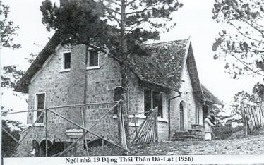

Nơi một chiếc bàn tròn nhỏ sát cửa kính nhìn ra hồ Green Lake... tôi đã tìm được một nơi lý tưởng để “viết”.
Bàn thật nhỏ. Tôi phải thu xếp gọn để có thể đặt được mọi thứ trên đó. Chiếc “laptop” đã chiếm gần hết mặt bàn. Phần còn lại dành cho ly cà phê Starbucks, chiếc bánh croissant bơ, nhật báo Seattles Times. Còn tập bản thảo dịch Đỉnh Gió Hú của Nhất Linh tôi chưa biết đặt ở đâu đành để chồng lên trên tờ báo.
Đầu mùa hạ, tôi về hưu. Tôi tự đặt cho mình những công việc phải làm. Ví dụ như phải vận động để giữ sức khỏe tốt, phải đánh máy bản thảo của ông cụ, bản thảo dịch cuốn tiểu thuyết Wuthering Heights của Emily Bronte, phải tiếp tục việc làm của ông cụ là dịch nốt một số chương cuối của cuốn tiểu thuyết, công việc ông cụ chưa hoàn tất khi qua đời.
Tôi tìm được một nơi có thể thực hiện cả hai thứ một lúc. Hồ Green Lake và quán cà phê Starbucks. Buổi sáng tôi thức dậy sớm lái xe đến hồ, đậu xe ở parking, chạy bộ một vòng quanh hồ chu vi 5 cây số, rồi tay xách cặp laptop, tôi đi ngang vườn hoa băng qua đường vào quán cà phê.
Nơi đó nếu phía trong quán khách không ngồi đông lắm như hôm nay, tôi có một chỗ ngồi lý tưởng có thể vừa đánh máy vừa nhìn được cảnh bên ngoài.
Qua cửa kính bên kia đường là khu vườn cây rậm rạp. Những hàng cây phong thẳng tắp. Ở cuối hàng cây hồ Green Lake lấp loáng trong ánh nắng. Thứ nắng lăn tăn trên nước tôi thoáng thấy trong trí nhớ từ thương xá Tràng Tiền Plaza Hà Nội nhìn sang bên kia đường khu vườn cây, sau những hàng cây xà-cừ đậm màu lá xanh có nắng nhấp nháy trên mặt Hồ Gươm.
Trên vỉa hè dưới hàng hiên rất đông người uống cà phê. Hôm nay hình như khách uống đều dồn cả ra ngoài vỉa hè để ngồi phơi mình dưới con nắng tươi mát hiếm hoi của miền Tây Bắc. Những chiếc bàn tròn, ghế sắt, sơn màu xanh mạ, màu Starbucks của những vòng tròn xanh trên cốc giấy cà phê, trên tạp dề những cô con gái tóc vàng đứng sau quầy.
Tôi cúi xuống cầm tập bản thảo. Tôi đã giữ tập bản thảo này từ hồi nào nhỉ? Không nhớ. Một quyển tập bìa cứng, khổ lớn, 20x27cm, gồm 200 trang giấy ca-rô, trang đầu ông cụ viết nắn nót bằng màu mực xanh lá cây.
EMILY BRONTE
MỎM GIÓ HÚ
NHẤT LINH dịch
PHƯỢNG GIANG
1952
Chữ MỎM xóa đi bằng bút chì, thay bằng chữ ĐỈNH, viết bằng mực đen, ngay phía trên. Lật sang trang ba tôi dò đọc những hàng chữ rất nhỏ của ông cụ và bắt đầu đánh máy:
“Năm 1801 - Tôi vừa đi thăm ông chủ nhà về. Vùng này đối với tôi thực là tuyệt, có lẽ trong toàn cõi nước Anh tôi không thể tìm được một nơi nào xa cách sự huyên náo như ở đây. Thật là cõi thiên đường của những kẻ chán đời: Ông Hy đối với tôi là hai người hoàn toàn hợp với vùng hiu quạnh. Ông Hy chắc không ngờ tôi có thiện cảm với ông ngay, mặc dầu lúc tôi cho ngựa tiến lên, hai con mắt đen của ông sâu hoắm nhìn tôi một cách nghi hoặc và lúc tôi xưng danh, các ngón tay của ông lại thọc sâu một cách rất quả quyết vào túi áo.
Tôi hỏi: ‘Thưa ông, ông có phải là ông Hy [1] không?’
Ông ấy chỉ gật đầu, không trả lời.”
Tôi ngừng tay trên phím chữ. Ông cụ viết bằng mực xanh, những chỗ sửa chữa viết bằng mực đen. Như vậy là ông cụ không sửa ngay khi vừa viết xong một đoạn, như thói quen viết văn của tôi. Câu: Thật là một cõi thiên đường của những người chán đời đầu tiên ông cụ viết là thiên đường của những người yếm thế. Còn câu: Ông ấy chỉ lẳng lặng gật đầu được sửa thành Ông ấy chỉ gật đầu, không trả lời.
Bên cạnh niên hiệu 1801, có ghi một hàng nhỏ 19-12-52. Đây là ngày Nhất Linh khởi dịch Đỉnh Gió Hú.
Những dòng chữ đó thật xa. Ông cụ ở đâu vào ngày 19 tháng 12 năm 1952, khi viết những dòng chữ này?
Sát gần tôi, bên kia cửa kính, là phía sau đầu của một cô gái Mỹ. Cô ngồi ngửa trên chiếc ghế sắt ở ngoài hiên, đầu ngả sát cửa, chăm chú đọc một quyển tiểu thuyết. Bàn tay cô đưa lên sau gáy lùa nghịch mái tóc. Những ngón tay cử động chậm rãi, lơ là. Một ngón tay xoay xoay cuốn tròn lọn tóc xung quanh ngón rồi bàn tay cô nắm vuốt từ từ kéo xuống phía dưới, lọn tóc tơ óng ả căng như thỏi kẹo kéo màu bạc trắng một thuở nào ông bán hàng kéo dài trong tuổi thơ tôi. Năm đó tôi 12 tuổi.
Tôi mở cửa vào phòng ông cụ, một gian buồng nhỏ trong căn nhà của bác Thụy tôi số 12P đường Chasseloup Laubat Sài Gòn. Ông cụ viết những dòng đó trên chiếc ghế vải trong tư thế nửa nằm nửa ngồi. Thảo nào bản thảo Đỉnh Gió Hú là một tập sách bìa cứng.
Tôi lật xem từng tờ của quyển bản thảo. Bên lề cứ cách mấy trang lại có ghi những dấu thời gian. 24-12-52, 1-1-53 (10 giờ tối). Bên dưới ngày 5-1-53 lại ghi thêm hàng chữ nhỏ: Thiếu thuốc lá văn vô vị, 4 giờ sáng mua ở đâu ra, hỡi trời? Dưới đó lại viết: 5 giờ sáng mua được hai điếu của người phu xe, lại có cà phê ngon của anh Trí. Mấy phút tuyệt hảo.
Thú vị quá! Ông cụ chắc không thể ngờ rằng thằng con ông hơn nửa thế kỷ sau đã khám phá một cách hứng thú những dòng chữ chua bên lề bản thảo.

Những hàng chữ này ông cụ viết ở nơi nào? Chắc chắn không phải ở nhà bác Thụy, vì bác Nguyễn Gia Trí không bao giờ ngủ qua đêm ở đó. Đúng rồi! Thời gian này ông cụ đã thuê một căn nhà riêng để lấy chỗ làm việc. Tôi chưa bao giờ đến đó nhưng các anh tôi nói đó là chỗ làm việc chung của ba người: Nhất Linh, Nguyễn Gia Trí, Trương Bảo Sơn. Gian nhà nhỏ nằm trong một con hẻm, hẻm đình Phú Thạnh; đầu hẻm đâm ra đường Lê Văn Duyệt, khúc ngã tư Phan Đình Phùng, gần Tòa Đại Sứ Miên.
Tôi đánh máy tiếp. Trong lúc tay tôi lua đi trên phím chữ, mắt theo dõi những hàng chữ nhỏ li ti trên bản thảo thì trí tôi lại trôi ngược về quá khứ.
Đà Lạt một nửa thế kỷ trước.
Năm 1956 - Ông cụ dịch được non nửa cuốn truyện của Bronte và tôi lần đầu tiên đọc Đỉnh Gió Hú. Quyển truyện này cuốn hút tôi mãnh liệt ngay từ chương đầu. Một đoạn văn ma quái của Emily Bronte để dấu ấn rất mạnh trong óc tôi.
Năm ấy ông cụ ở căn nhà số 19 đường Đặng Thái Thân Đà Lạt. Trên đỉnh đèo Prenn con đường Nguyễn Tri Phương dẫn vào thành phố. Tại một khúc cong, cạnh tòa nhà số 17, một con đường nhỏ, cụt, trải đá vụn dẫn vào tòa nhà “Gió Hú” của chúng tôi. Đó là một căn nhà bằng đá, tường dầy, cửa sổ thụt sâu, mái nhọn, đứng một mình, chênh vênh nhìn xuống một triền đồi thông trùng điệp, một biệt thự duy nhất còn đứng vững trong một khu vực toàn những căn nhà bỏ hoang xây cất từ thời Pháp thuộc.
Tuy là nơi cư trú của cả hai gia đình, gia đình chúng tôi và gia đình ông bà Lê Đình Gioãn, nhưng vì hồi đó phần lớn những người của hai gia đình đều sinh sống ở Sài Gòn, thỉnh thoảng mới kéo nhau lên Đà Lạt, nên trên thực tế “Gió Hú” của chúng tôi rất ít người ở. Thường xuyên chỉ có mặt ba người sống lặng lẽ ở đó là ông cụ, chị Thoa và tôi.
“Would you like to try some?”
Tôi ngửng lên. Cô gái Starbucks chìa khay trước mặt tôi. Trên khay có những miếng bánh được cắt thành hình hộp nhỏ vuông vắn, mỗi miếng có gắn que tăm. Tôi kẹp tăm giữa hai ngón tay, ngước nhìn cô gái nói cám ơn rồi tôi cúi xuống tiếp tục đánh máy:
“Tòa nhà của ông Hy lấy tên là Đỉnh Gió Hú: sở dĩ gọi Gió Hú vì những khi trời bão, gió lồng lộng hú lên trong tòa nhà đó. Trên mỏm cao ấy chắc quanh năm không khí trong lành. Người ta biết ngay gió bấc trên đó thổi rất mạnh vì những cây thông cằn mọc ở đầu nhà nghiêng hẳn về một phía và một dẫy cây gai chĩa cành về một bên như muốn dướn ra đớp lấy ánh sáng mặt trời. Cũng may tòa nhà xây cất chắc chắn, cửa sổ hẹp thụt sâu vào tường và có viền đá nhô ra để chắn gió.”
Đoạn văn trên đây của Emily Bronte khiến tôi liên tưởng đến căn nhà “Gió Hú” của chúng tôi. Ngoài nhìn vào thì trông như nhà một tầng, nhưng thật ra là ba. Từ cửa tò vò đi vào là gian chính, gồm một phòng khách thật lớn và hai buồng ngủ. Ngay sau cửa vào có hai cầu thang, một đi lên, một đi xuống. Đi lên là gác xép. Đi xuống là nhà bếp. Gác xép là nơi ngủ của bọn con trai chúng tôi. Khi các anh tôi và các anh con bác Gioãn từ Sài Gòn kéo lên thì chúng tôi chen chúc nhau ngủ trên đó. Đến khi các anh ấy về lại Sài Gòn thì tôi ngủ ở đấy một mình.
Những đêm mưa nằm ngửa nhìn lên những cây đà gỗ bắc xiên xuống, tai nghe rõ từng tiếng mưa đập trên mái ngói và cảm nhận khí lạnh ẩm ướt của miền cao nguyên theo gió len vào phòng qua các khe hổng nhỏ giữa những xà ngang. Qua những khe đó vào đêm giông bão tôi nghe cây thông sau nhà quằn quại đập cành vào cửa sổ gác xép, nơi đó thỉnh thoảng lóe lên một ánh chớp làm sáng hiện những giọt nước mưa trượt đi chạy ngoằn ngoèo trên mặt kính.
Dưới nhà căn phòng khách là giang sơn của ông cụ. Phòng có rất nhiều cửa kính nhìn xuống triền núi. Màu lá cây của rừng thông trải dài xuống cuối thung lũng sâu. Rừng thông nối nhau nhấp nhô trên những quả đồi thấp đến tận chân trời, nơi đó màu xanh mạ chuyển dần sang màu xanh lam. Trong phòng khách ông cụ treo rất nhiều hoa phong lan trên tường. Trên sàn nhà cũng đặt nhiều chậu lan đất, phần lớn là lan Thanh Ngọc. Chúng ôi được lệnh phải cởi giầy khi bước vào phòng này, vì sàn nhà lúc nào cũng sạch bóng được lát bằng những miếng gỗ đặt chéo nhau. Mỗi tháng một lần tôi thấy ông cụ bò trên sàn nhà lấy giẻ bôi xi-ra đánh bóng từng phiến gỗ một. Giữa phòng có bộ xa-lông, trên chiếc bàn tròn, tôi thấy hai tập bản thảo của ông cụ, tập Xóm Cầu Mới gồm 4 quyển và một tập Đỉnh Gió Hú. Những hôm ông cụ vắng nhà tôi thường vào phòng khách tẩn mẩn giở những tập này ra xem. Tôi không đọc mà chỉ nhìn những hình ông cụ vẽ trong hai tập bản thảo. Tôi nghiệm ra rằng thời gian này ông cụ chỉ đụng đến tập Xóm Cầu Mới, còn truyện dịch Đỉnh Gió Hú ông cụ không ngó ngàng tới. Chính vì thế mà tôi nghĩ nếu mình có “mượn tạm” mấy ngày cuốn truyện dịch mang lên gác xép đọc thì chắc là ông cụ cũng chẳng hay biết.
Chị Thoa là người đầu tiên đặt nghi vấn căn nhà này có ma. Tuy trong bụng không tin nhưng tôi bắt đầu cảm thấy rờn rợn. Tôi bắt đầu sợ bóng tối. Tôi sợ những đêm mưa gió. Mà Đà Lạt trong trí tưởng tôi thì hầu như quanh năm lúc nào cũng mưa gió. Những đêm nằm trong bóng tối tôi nghe những giọt mưa rỉ rả rơi trên mái ngói, tiếng mưa miên man rền rĩ trôi vào trong giấc ngủ tôi. Kể từ ngày chị Thoa nói nhà có ma tôi chong đèn suốt đêm, cái ngọn đèn điện nhỏ ở đầu giường trước đây tôi thường tắt trước khi ngủ.
Cho đến một đêm kia thì tôi tin là nhà có ma thật. Bởi vì chính tôi nhìn thấy “nó” tận mắt. “Nó” hiện ra sau cái cửa sổ kính kia vào một đêm mưa bão. Đêm ấy nơi cửa sổ kính lóe lên một lằn chớp. Tôi thấy sau những giọt nước mưa chạy ngoằn ngoèo trên mặt kính là khuôn mặt ướt át tái nhợt của một cô con gái ở ngoài nhìn trừng trừng vào trong.
Chỉ một thoáng thôi. Nhưng tôi đã bừng dậy. Hoảng sợ tôi hấp tấp bước xuống cầu thang. Qua cánh cửa mở buồng ngủ nhà dưới ông cụ vẫn còn ngồi viết dưới ánh sáng một ngọn đèn chụp. Tôi hấp tấp quá thành thử gây tiếng động mạnh. Ông cụ quay đầu về phía sau nói: “Con chưa đi ngủ à?” Không biết trả lời ra sao tôi lẳng lặng đi vào buồng tắm giả vờ như đi tiểu.
Lát sau tôi lên gác. Tôi ngồi bên cạnh giường, mắt không rời ngọn đèn con. Tôi tránh nhìn bóng tối. Tôi tránh nhìn cửa sổ.
“... tôi bắt đầu díu mắt lại nằm dài trên giường ngủ thiếp đi. Từ lúc tôi biết đau khổ đến giờ chưa có một kỷ niệm nào ghê gớm bằng đêm ấy.”
“I'm sorry....”
Tôi ngước lên. Người đàn ông cầm cốc cà phê Starbucks lách qua dẫy ghế, hông của ông ta đụng vào làm xô lệch quyển bản thảo Đỉnh Gió Hú tôi đặt hơi lòi ra ngoài bàn.
Bên ngoài cửa kính mái tóc vàng của cô gái Mỹ không còn nữa. Thay vào đó là một mái tóc đen, dài, mượt. Không nhìn phía trước tôi không đoán được cô gái có mái tóc đen là người Tàu, người Nhật hay người Việt Nam. Chỉ đoán là cô rất trẻ. Trên bàn của cô, giống như bàn tôi, có một cái laptop để mở, tôi không nhìn thấy màn chữ vì ánh phản quang. Bên cạnh laptop là một quyển sách Calculus dầy cộm. Nhưng cô ta không có vẻ như một sinh viên chăm học. Cô đang cho chim ăn.
Bầy chim sẻ bay túa lên cao. Một thanh niên và một thiếu nữ vừa kéo ghế ngồi cạnh bàn cô gái tóc đen. Lát sau đàn sẻ lại xà xuống. Chúng nhẩy lích chích những bước ngắn trên hè. Cô tóc đen giở bao giấy véo một mẩu bánh ngọt vứt xuống. Lập tức cả chục chiếc cánh đập rối lên xà vào chân ghế. Một con mỏ ngậm mẩu bánh bay vụt lên, cả bầy bay quấn theo sau.
Tôi cúi xuống đánh máy tiếp. Tôi đánh máy đoạn văn sau đây trong chương III của tập bản thảo. Chính đoạn văn này đã để lại dấu ấn rất mạnh trong óc tôi, cậu bé 16 tuổi:
“… tôi bắt đầu díu mắt lại nằm dài trên giường ngủ thiếp đi. Từ lúc tôi biết đau khổ đến giờ chưa có một kỷ niệm nào ghê gớm bằng đêm ấy.
Tôi nằm mơ cùng đi với bác Dọi đến nhà thờ, có rất đông người nghe giảng đạo. Tôi thì tôi mệt lắm! Tôi vặn người, tôi ngáp, ngủ gật rồi tỉnh dậy. Tôi lấy tay thích bác Dọi để bác cho tôi biết bao giờ thì giảng xong. Rồi bỗng nhiên tất cả mọi người xúm quanh tôi, giơ gậy định đánh tôi. Trong lúc hỗn loạn những chiếc gậy định đập vào đầu tôi lại đập lầm vào sọ người khác. Nhà thờ vang lên chí chát những đòn tấn công và phản công. Rồi người giảng đạo đập tới tấp như mưa rào trên bàn giảng đạo, tiếng đập dữ dội làm tôi choàng dậy và cảm thấy người nhẹ nhõm hẳn.
Tại sao tôi lại mơ thấy chuyện đánh lộn nhau và người giảng đạo đập bàn? Thì ra chỉ tại một cành thông mỗi lần gió thổi lại chạm vào cửa sổ, quả thông cứng đập vào mặt kính!
Tôi lắng nghe một lúc, trong lòng ngờ ngờ vực vực, rồi tôi trở người, chập chờn ngủ tiếp và lại mơ, lần này còn tệ hại hơn.
Tôi nhớ ra mình đang nằm trong cái buồng bé tí bằng gỗ sồi và tôi nghe rõ ràng tiếng ào ào của gió tuyết cùng tiếng đập tới tấp của quả thông, tiếng động làm tôi bực mình quá và nhất định tìm cách làm cho nó im đi... tôi trở dậy định mở cửa sổ. Cái quả nắm lại gắn chặt vào ổ khoá.
‘Nhất định phải mở...’ tôi lẩm bẩm thế. Tôi đấm mạnh cho cửa kính vỡ rồi thò tay ra ngoài tìm cái cành thông khó chịu kia. Nhưng đáng lẽ nắm lấy cành thông thì ngón tay tôi lại nắm vào những ngón của một bàn tay nhỏ, lạnh như nước đá. Cả cái ghê sợ cực điểm của giấc mơ chiếm lấy người tôi: tôi cố kéo tay về nhưng bàn tay kia cứ bám chặt lấy và một tiếng nói giọng buồn thương vô hạn thổn thức: ‘Cho em vào! Cho em vào!’ Tôi vừa gỡ cánh tay ra vừa hỏi: ‘Cô là ai?’ Tiếng đáp lại run run: ‘Tôn Liên đây. Em đã tìm về nhà được. Em vừa bị lạc trong rừng cỏ.’ Tiếng ấy tiếp tục nói và tôi thấy mơ hồ nét mặt của một người trẻ tuổi nhìn vào cửa sổ. Sự kinh hoàng khiến tôi trở nên độc ác. Biết là mình không thể gỡ tay ra nổi, tôi kéo cổ tay cô ta để lên miếng kính vỡ rồi cứa đi cứa lại cho đến khi máu chẩy ra đẫm ướt cả khăn giường. Tiếng nói vẫn rên rỉ: ‘Cho em vào’ và bàn tay vẫn nắm chặt lấy tay tôi khiến tôi gần như điên lên vì kinh sợ. Sau cùng tôi bảo: ‘Tôi mở thế nào được nếu cô muốn vào cô phải bỏ tay tôi ra đã.’ Các ngón tay thả lỏng ra, tôi vội rụt tay tôi vào, lấy sách chất đầy lên che lỗ hổng, rồi bịt tai lại để khỏi nghe thấy tiếng kêu than rên rỉ. Tôi đứng yên như thế độ mười lăm phút, song mỗi khi để ý nghe, lại thấy tiếng rên rỉ đau thương ấy tiếp tục. Tôi kêu lên: ‘Đi ngay đi, cô có van xin tôi trong hai mươi năm tôi cũng không cho cô vào.’
Tiếng nói lại rên rỉ: Đã hai mươi năm rồi, hai mươi năm, đã hai mươi năm em đi lang thang. Rồi tôi nghe như có tiếng cạo cạo ở ngoài và chồng sách động đậy như bị đẩy vào phía trong. Tôi định đứng lên, nhưng không sao cử động được tay chân: tôi hoảng sợ đến điên dại rồi gào thét ầm lên.
Tôi ngạc nhiên nhận thấy tiếng gào thét của tôi là có thực chứ không phải là tiếng trong một giấc mơ...”
°
Tôi choàng dậy. Cơn bão khiến đèn điện trong nhà tắt hết. Có tiếng bước nhanh lên cầu thang. Ông cụ đứng ở cửa, tay cầm ngọn nến. Ánh nến hắt từ dưới lên lõm những bóng sâu trên gương mặt khiến ông cụ trông khắc khổ như một pho tượng đồng.
Ông khom người lại gần giường đưa cây nến lại gần mặt tôi, nói dịu dàng:
“Con lại mơ ngủ rồi!”
Nói xong ông cụ cúi xuống nhặt lên một tập bìa cứng cầm trên tay rồi ông quay người lẳng lặng bước xuống cầu thang.
Đó là tập bản thảo dịch Đỉnh Gió Hú của Nhất Linh tôi đang đánh máy 50 năm sau tại một quán cà phê Starbucks thành phố Seattle ngày 23 tháng 8 năm 2006.
Nơi một chiếc bàn tròn nhỏ sát cửa kính nhìn ra hồ Green Lake...
Nguyễn Tường Thiết